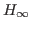

We present a new spectral value set based algorithm for fast approximation of the

norm, a well known and important robust stability measure for linear dynamical systems with inputs and outputs. Calculating the norm involves solving a nonconvex and nonsmooth optimization problem and although the standard algorithm by Boyd, Balakrishnan, Bruinsma, and Steinbuch (BBBS) finds the optimal solution, its cubic cost per iteration limits its applicability to rather small dimension control systems. One approach to handle larger problems is to use model reduction techniques that attempt to approximate a large scale input system by generating a reduced size surrogate model of which the can be tractably computed via the standard BBBS algorithm. On the other hand, in 2013, Guglielmi, Gürbüzbalaban and Overton presented the first fast algorithm (GGO) to approximate the norm that operates directly on the unreduced matrices of the original system, under the assumption that the dynamical system is sparse and has relatively few inputs and outputs. The GGO algorithm attempts to find local optima as proxies for the true value of the norm by bracketing stationary points of the optimization problem with lower and upper bound estimates using spectral value sets and converges to a solution via a hybrid Newton-bisection outer iteration. Unfortunately, despite its favorable scaling properties and apparent ability to provide good approximations to the norm, the algorithm can sometimes break down in practice, specifically by failing to return a stationary point of the optimization function or even a point that lies on the function itself. Our improved algorithm uses a novel hybrid expansion-contraction scheme that, under the same assumptions as GGO, guarantees convergence to a stationary point of the optimization problem but importantly does not incur any breakdown. We compare the two algorithms along with other recent algorithms designed for approximating the norm of large and sparse control systems on a suite of challenging continuous and discrete-time example problems.